quisseh
Hi there. My name is quisseh.I make software, especially video games.
Barcelona Itinerary
Six hours in Lisbon, six days in Barcelona
Day 1 (2018-02-11)
- Aeroporto de Lisboa
- Praça Rossio
- Elevador de Santa Justa
- Arco da Rua Augusta
- Praça do Comércio
- Sé de Lisboa
- Castelo de São Jorge
 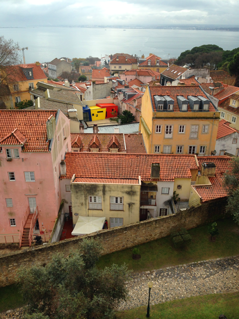
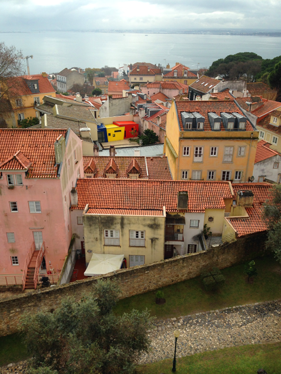
Day 2 (2018-02-12)
- Aeroport de Barcelona
- Casa Gracia
Day 3 (2018-02-13)
- Casa Milà
- Casa Batlló
- Plaça de Catalunya
- Catedral de Barcelona
- Mercat de la Boqueria
- Monument a Colom
- Port Vell
- Platja de la Barceloneta
- L'Estel ferit
- Plaça Reial
- El Gat de Botero
- Jardins de Rubió i Lluch
- Casa Gracia
 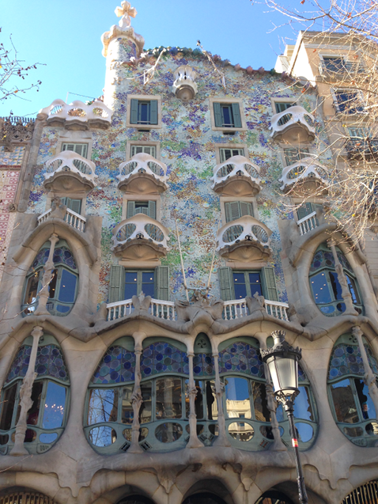
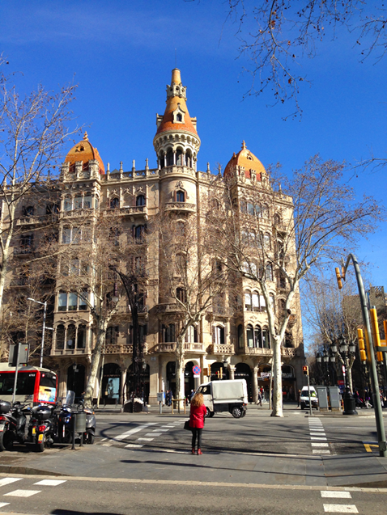
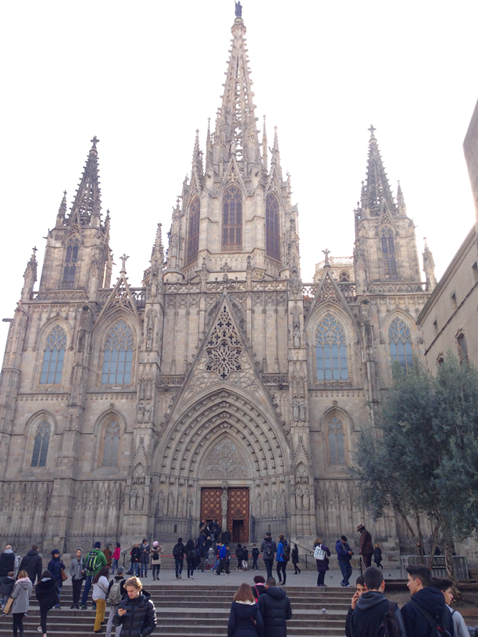
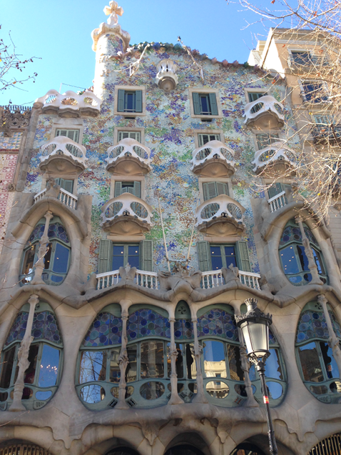
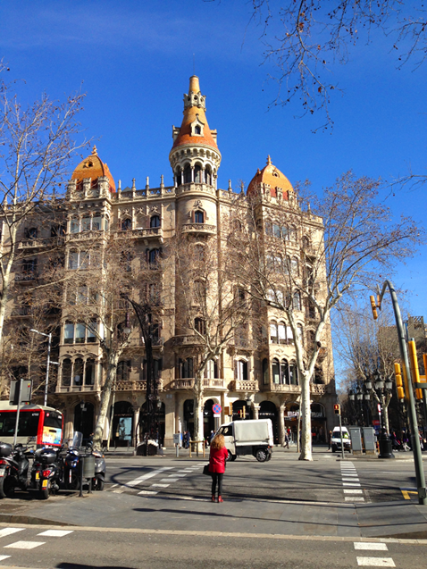
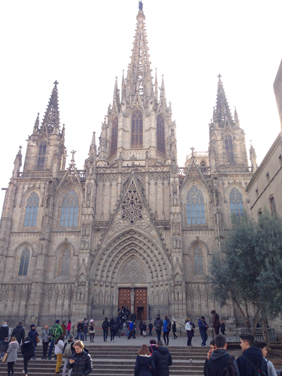
 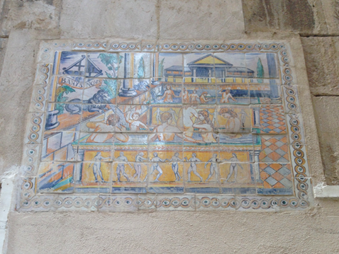
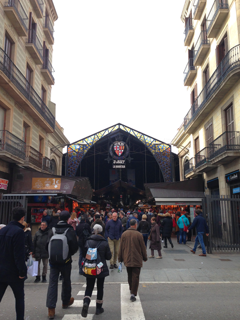
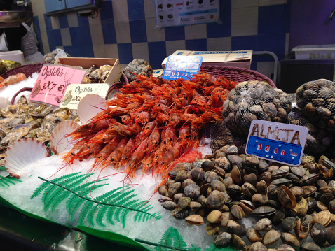
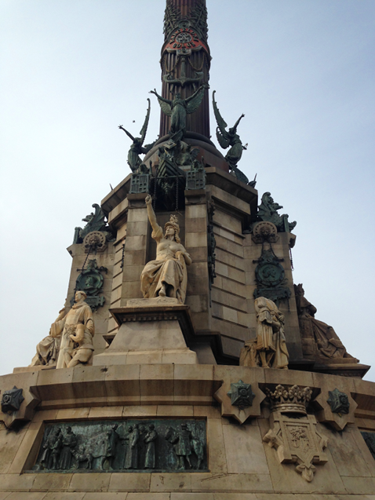
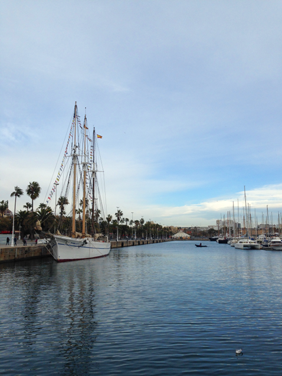
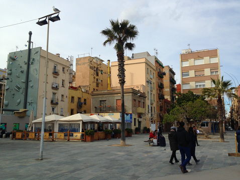
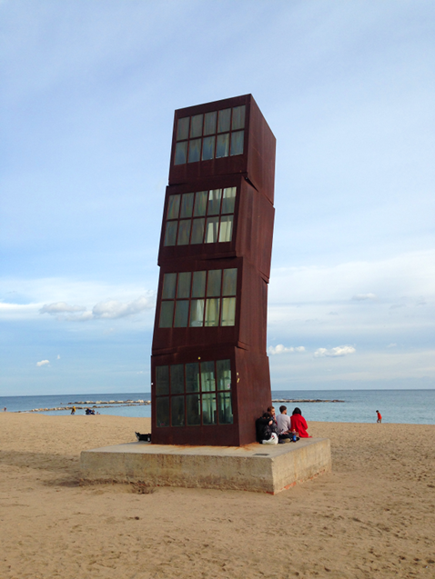
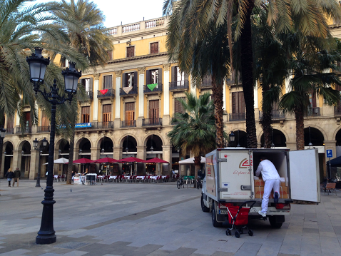
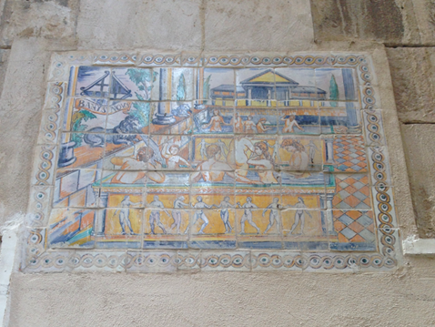
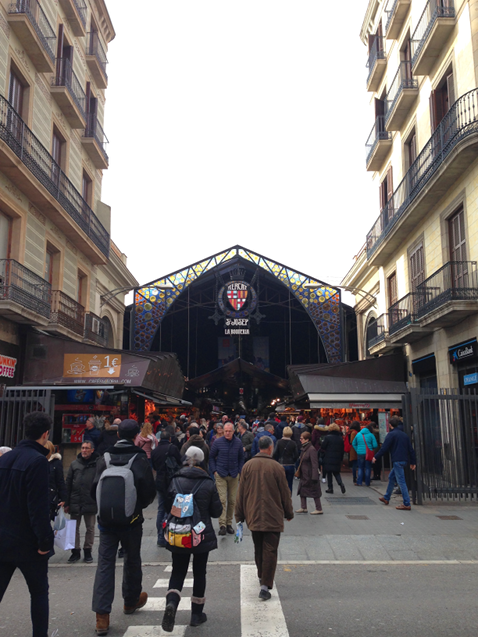
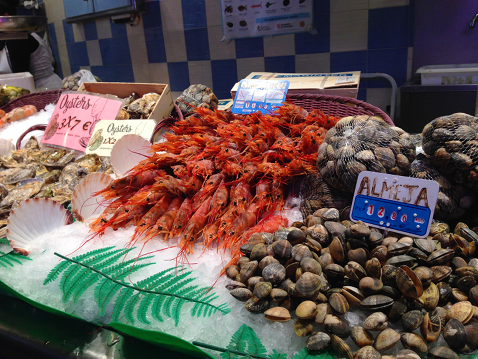
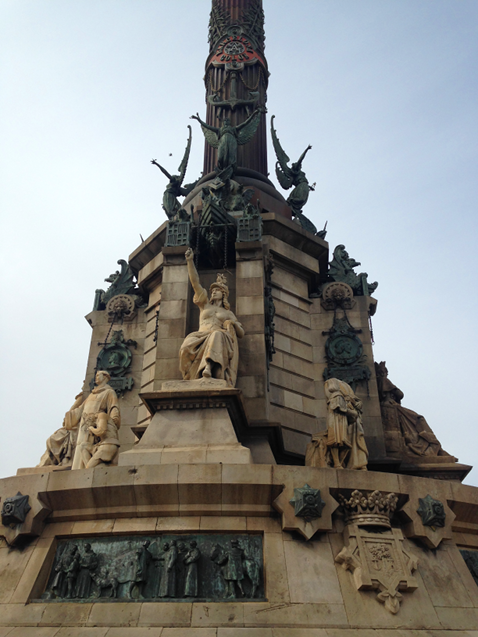
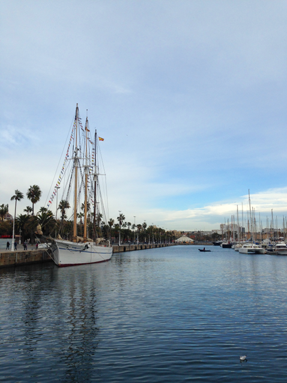
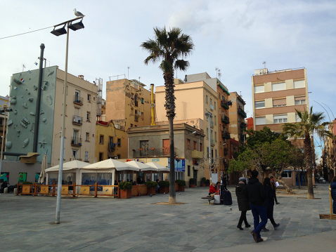
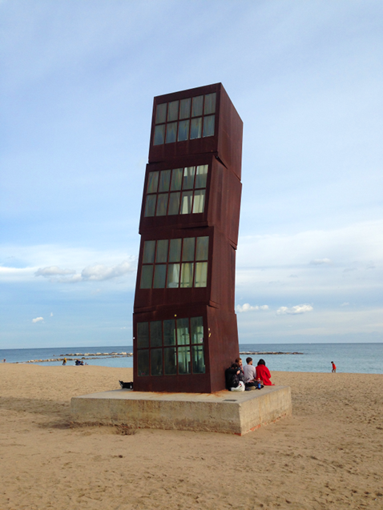
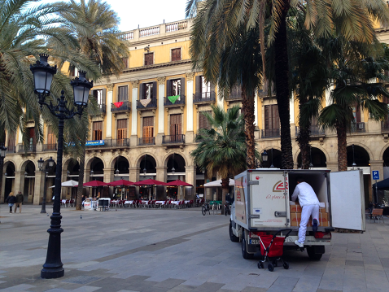
Day 4 (2018-02-14)
- Parc del Laberint d'Horta
- Plaça d'Espanya
- Museu Nacional d'Art de Catalunya
- Castell de Montjuïc
- Casa Gracia
 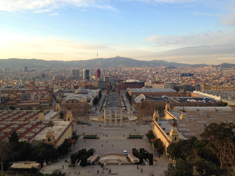
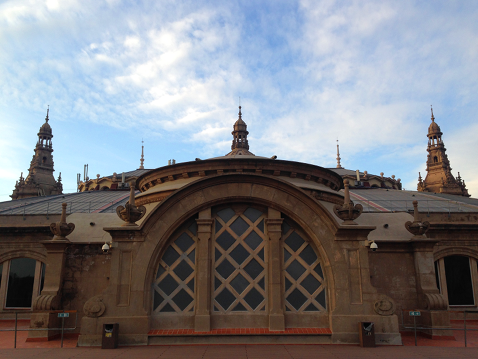
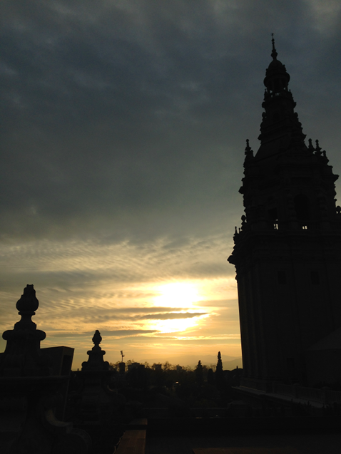
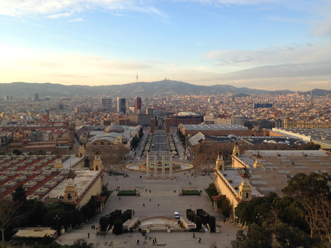
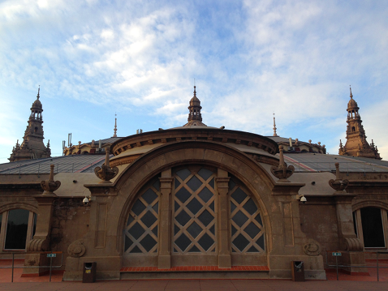
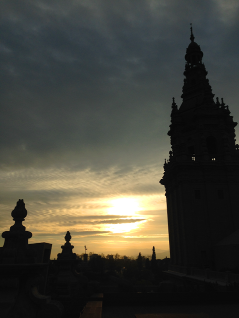
Day 5 (2018-02-15)
- Plaça d'Espanya
- Aeri de Montserrat
- Montserrat
- Santa Maria de Montserrat
- Sant Jeroni
- Casa Gracia
Day 6 (2018-02-16)
- Park Güell
- Búnquers de Can Baró
- Sagrada Família
- Plaça de Gaudí
- Arc de Triomf
- Parc de la Ciutadella
- Barcelona Airport Hotel


Day 7 (2018-02-17)
- Aeroport de Barcelona
Vegan restaurant recommendations
- BioCenter
- Teresa Carles
- La Trocadero